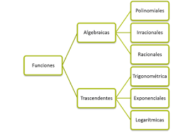

Funciones
¿Que es una funcion?
Una función es una regla de asociación que relaciona dos o mas conjuntos entre si; generalmente cuando tenemos la asociación dos conjuntos las función se define como una regla de asociación entre un conjunto llamado dominio con uno llamado codominio, también dominio e imagen respectivamente o dominio y rango. Esta regla de asociación no permite relacionar un mismo elemento del dominio con dos elementos del codominio.
Domino y codominio.
Se dice que el dominio de una función son todos los valores que puede tomar el conjunto del dominio y que encuentra correspondencia en el conjunto llamado codominio, generalmente cuando se habla del plano, el dominio es el intervalo de valores que están sobre el eje de las X´s y que nos generan una asociación en el eje de las Y´s. El otro conjunto que interviene en la definición es el conjunto llamado codominio o rango de la función, en ocasiones llamado imagen, este conjunto es la gama de valores que puede tomar la función; en el caso del plano son todos los valores que puede tomar la función o valores en el eje de las Y´s. También, cuando se grafica en el plano cartesiano se tiene una relación de dos variables, considerando como variable aquella literal que esta sujeta a los valores que puede tomar la otra.
Tipos de variables.
Variables dependientes. Son aquellas variables que como su nombre lo indica, dependen del valor que toma las otras variables Por ejemplo: «f(x) = x», «y o f(x)» es la variable dependiente ya que esta sujeta a los valores que se le subministre a «x».
Variable independiente. Es aquella variable que no depende de ninguna otra variable, en el ejemplo anterior la «x» es la variable independiente ya que la y es la que depende de los valores de «x».
Variable constante. Es aquella que no esta en función de ninguna variable y siempre tiene el mismo valor ejemplo: “y=2”, la constante gravitacional, entre otras.
Video de ayuda